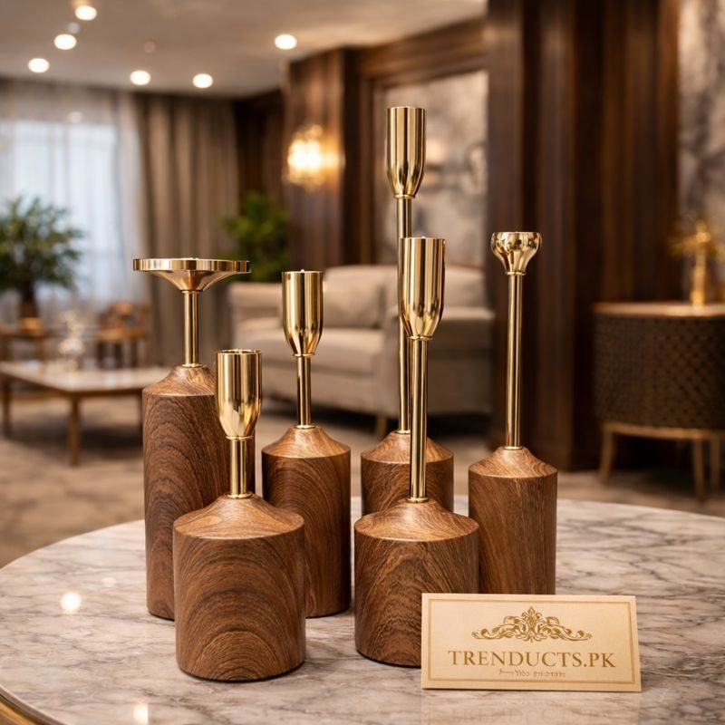

- Keep the mood calm, not loud
- Candle stands that do the work
- Safety rules for open flames
- Where to place the light
- Pairing light with a clean, fragrant home
- Sharing halwa beautifully
- After the night
- Final thoughts
Shab-e-Barat, the fifteenth night of Shaban, is a night of prayer, reflection and remembrance for many families in Pakistan. Homes are cleaned, halwa is cooked and shared with neighbours, and in many neighbourhoods soft lights glow on balconies and rooftops. Lighting the home is not a religious requirement, but for many families it is a cherished part of the atmosphere: a way to make the night feel calm and different from ordinary evenings.
This guide is about doing that thoughtfully. It focuses on safe, elegant lighting with candle stands and lanterns, avoids the loud fireworks that disturb others, and suggests ways to create a peaceful mood for prayer and family time.
Keep the mood calm, not loud
The spirit of the night is quiet worship and seeking forgiveness. Bright disco lights and firecrackers clash with that, and fireworks injure many children every year. Soft, warm light suits the night far better. Think of a few candles in the lounge where the family gathers, a lantern near the prayer area, and gentle lights at the entrance to welcome relatives who come to share halwa.
Candle stands that do the work
A good candle stand makes a few candles look intentional and elegant rather than scattered. Multi-piece sets with different heights create a beautiful grouping on a side table or a console near the door. Wooden-texture finishes feel warm and traditional, while crystal candelabras catch light and sparkle, which looks stunning in a formal drawing room. Families who host every festive season often build a small collection over the years. If you are starting out, a set from the Trenducts candle holders and lanterns range gives you a centrepiece you can reuse on Eid, Chaand Raat and mehndi nights too.

Safety rules for open flames
Real candles bring real risks, especially in homes with children, curtains and cushions. Follow these simple rules:
- Place candles on stable, heat-proof stands, never directly on wooden furniture or plastic
- Keep at least a foot of clear space around flames, away from curtains and dupattas
- Never leave candles burning in an empty room or while the family sleeps
- Keep matches and lighters out of children's reach
- Have a small bowl of water or sand nearby on rooftops and balconies
If you have very young children or pets, consider LED candles. They give a similar glow without any flame.
Where to place the light
Start with the entrance, since guests and neighbours arrive through it. A pair of lanterns on either side of the door looks welcoming. In the lounge, group candles on one surface rather than spreading them everywhere; a single focal point looks calmer. Near the prayer area, keep lighting soft and low so it does not distract. On balconies, use enclosed lanterns because wind puts out open candles and can blow flames toward fabrics.
Pairing light with a clean, fragrant home
Families often clean the house thoroughly before Shab-e-Barat. A tidy room makes candlelight look even better because there is less clutter catching shadows. A light, natural fragrance such as rose or sandalwood from an incense burner or diffuser adds to the peaceful feeling. Keep fragrance subtle; strong scents can bother elders and anyone with breathing problems.
Sharing halwa beautifully
Halwa, whether chanay ki daal, suji or gajar, is shared with neighbours and relatives on this night. Present it in small bowls or on a neat tray covered with a cloth. Some families place a candle stand at the centre of the dining table and arrange halwa bowls around it, which looks lovely when visitors drop by.
After the night
When the night is over, let candle stands cool before cleaning. Remove wax drips by placing the stand in the freezer for an hour; hardened wax pops off easily. Wipe with a soft cloth and store pieces wrapped in newspaper or bubble wrap, so they are ready for Ramadan and Eid.
Final thoughts
Lighting the home on Shab-e-Barat is about atmosphere, not spectacle. A few well-placed candle stands and lanterns, used safely and paired with a clean home, create the calm mood the night deserves. Skip the fireworks, keep flames away from children and fabrics, and let soft light frame a night of prayer and togetherness.